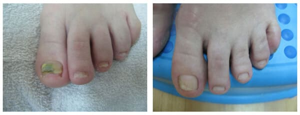
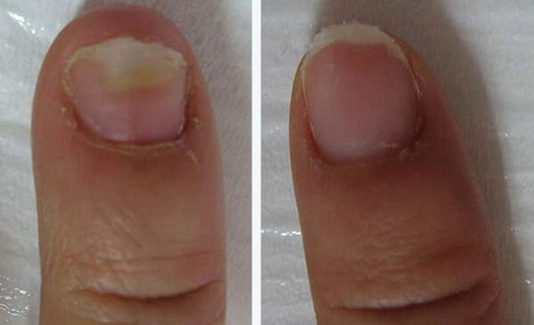
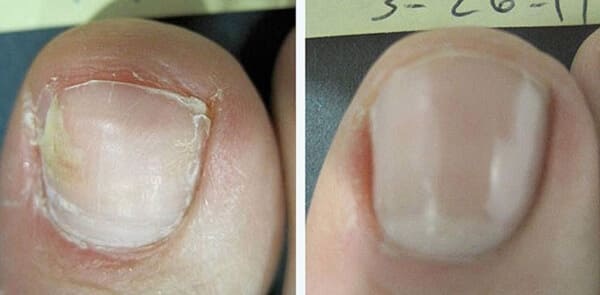

Dzień dobry, drodzy widzowie i czytelnicy!
Od wielu lat codziennie występuję na ekranach waszych telewizorów, aby omawiać z Wami różne choroby i sposoby ich leczenia. Wielokrotnie rozmawialiśmy o grzybicy. Jeśli pamiętasz, w jednym z programów przykładaliśmy dużą wagę do metod leczenia tej choroby, ale nikt nie wie, że ja też miałam grzybicę na stopach. Do niedawna starałam się to starannie ukrywać, ale teraz, kiedy w końcu pokonałam tę chorobę, nie mam już nic do ukrycia!
Grzyb na paznokciach pojawił się z powodu grzybicy stóp. Ostatnią chorobę raz leczyłam, raz lekceważyłam, jak my wszyscy. Chodziłam do dermatologa, ale nie doszło do pełnej remisji. Około trzy lata temu zaczęły się obrzydliwe zmiany - najpierw paznokcie na dużych palcach zaczęły żółknąć, a potem zaczęły się oddzielać od skóry. Rosnący paznokieć, który miał być biały i zdrowy, zaczął wyrastać nierówno, stał się gruby, po prostu brzydki. Lekarz prowadzący zalecił poddanie się kompleksowemu leczeniu według specjalnego schematu. Oprócz miejscowego leczenia samego grzyba taki schemat obejmuje stosowanie leków przeciwgrzybiczych w żywności. Ale jako lekarz wiem, jak takie leczenie może uszkodzić nerki i wątrobę, dlatego zaczęłam szukać innej, bezpieczniejszej i nie mniej skutecznej metody.
Przez co musiałam przejść
Wydaje mi się, że próbowałam sukcesywnie wszystkich mniej lub bardziej znanych kremów, sprayów, maści i innych, ale niestety nic nie przynosiło znaczącej poprawy. Ale, jak mówią, nie ma szczęścia ten, kto nie próbuje i po latach bezużytecznej męki dostałam paczkę kremu o nazwie "". Myślę, że teraz wielu z was jest bardzo zaskoczonych: w jaki sposób jakiś krem może pomóc pozbyć się grzybicy? Wróćmy jednak trochę wstecz, dokładniej - do jednego z poprzednich programów. Mówiłam o tym, jak można rozpocząć proces regeneracji organizmu, dla którego konieczne jest oddziaływanie na niektóre receptory komórek naszego organizmu. Leczenie grzybicy, i nie tylko, staje się skuteczne, jeśli organizm sam wraca do swojego pierwotnego stanu komórka po komórce. Wówczas leczenie przestaje być tylko walką z konsekwencjami, a eliminuje pierwotną przyczynę choroby. Pamiętając o tym, dokładnie przestudiowałam skład kremu i nie znajdując nic podejrzanego postanowiłam wypróbować go w praktyce.
Po dwóch tygodniach stosowania kremu mogłam śmiało powiedzieć, patrząc na paznokcie wyrastające spod naskórka - efekt jest widoczny, dokładniej, na paznokciach. Odrastające paznokcie całkowicie wracają do zdrowego stanu: białe, czyste i równe. Nieco później swędzenie zniknęło, pieczenie również. Wreszcie udało mi się wybrać buty, które mi się podobają!
Co mówi medycyna?
Po takim wyniku postanowiliśmy przeprowadzić szczegółowe badania kremu "". Wyniki badań laboratoryjnych Instytutu Dermatologii:
Sprawdzając na sobie działanie kremu , postanowiłam oddać go do laboratorium badawczego. Testy laboratoryjne badające krem , wykazały następujące:
1. Krem zawiera wyłącznie naturalne ekstrakty ziół leczniczych, nie ma śladów środków hormonalnych i składników pochodzenia chemicznego.
2. Maść nie powoduje skutków ubocznych, dlatego można ją bezpiecznie stosować w domu.
3. Substancje lecznicze dostające się do organizmu wraz z kremem szybko dostają się do krwiobiegu i łatwo rozprowadzają się po całym organizmie, lecząc nawet najbardziej odległe narządy i tkanki.
Do badań klinicznych wybrano 85 ochotników z różnymi stadiami rozwoju grzybicy paznokci i stóp. Obserwacje trwały 30 dni, po tym okresie badacze sformułowali następujące wyniki:
- u zdecydowanej większości (82) pacjentów zaobserwowano wyraźną poprawę przebiegu procesów regeneracyjnych;
- we wszystkich przypadkach odnotowano poprawę stanu płytki paznokcia;
- zauważono szybsze tempo wzrostu zdrowych paznokci;
- w 97% obserwowanych w ciągu 30 dni kuracji doszło do całkowitego wyleczenia grzybicy.
Przebieg leczenia grzybicy stóp i paznokci:
Znajdując dla siebie osobisty ratunek, z radością polecam ten środek wszystkim pacjentom z chorobami grzybiczymi stóp i paznokci. Wielu z nich zauważyło, że po 2, maksymalnie 3 tygodniach kuracji paznokieć zaatakowany przez grzyba jest nie do odróżnienia od zdrowego.
Znane przyczyny infekcji grzybiczych stóp i paznokci: zarodniki grzybów często rozprzestrzeniają się w miejscach publicznych – na basenach, plażach, łaźniach, saunach, prysznicach. Rozwój grzyba ułatwia również zwiększona potliwość nóg, otarcia na skórze, a także żylaki. Jednocześnie wczesne rozpoczęcie leczenia pozwala w krótkim czasie osiągnąć znaczną poprawę. W związku z tym zmniejsza się również ryzyko zakażenia rodziny, krewnych i przyjaciół poprzez używanie tych samych kapci, myjek itp.
"" należy zamawiać tylko u autoryzowanego dostawcy; tylko te produkty spełniają wszystkie niezbędne certyfikaty jakości i wielokrotnie udowadniają swoją skuteczność. Zwracam uwagę na fakt, że teraz w wielu miejscach oferowane są podróbki, z których nie tylko nie uzyskasz żadnego efektu, ale także mogą wywołać skutki uboczne.
Ostatnio rośnie liczba przypadków sprzedaży niecertyfikowanego kremu . Takie "lekarstwo" nie ma właściwości leczniczych. W celu ochrony interesów osób z chorobami grzybiczymi umieściliśmy przycisk umożliwiający zamówienie oryginalnego środka. Kliknięcie tego przycisku spowoduje przekierowanie na oficjalną stronę jedynego dostawcy kremu w całej Polsce.
Co więcej, dla czytelników bloga Józefy Kucharską na stronie internetowej dostawcy obowiązuje specjalna zniżka. Możesz ją zdobyć, klikając przycisk poniżej. Uwaga: ilość promocyjnych opakowań kremu ograniczona!

Komentarze



Bądźcie zdrowi i uważajcie na podróbki!